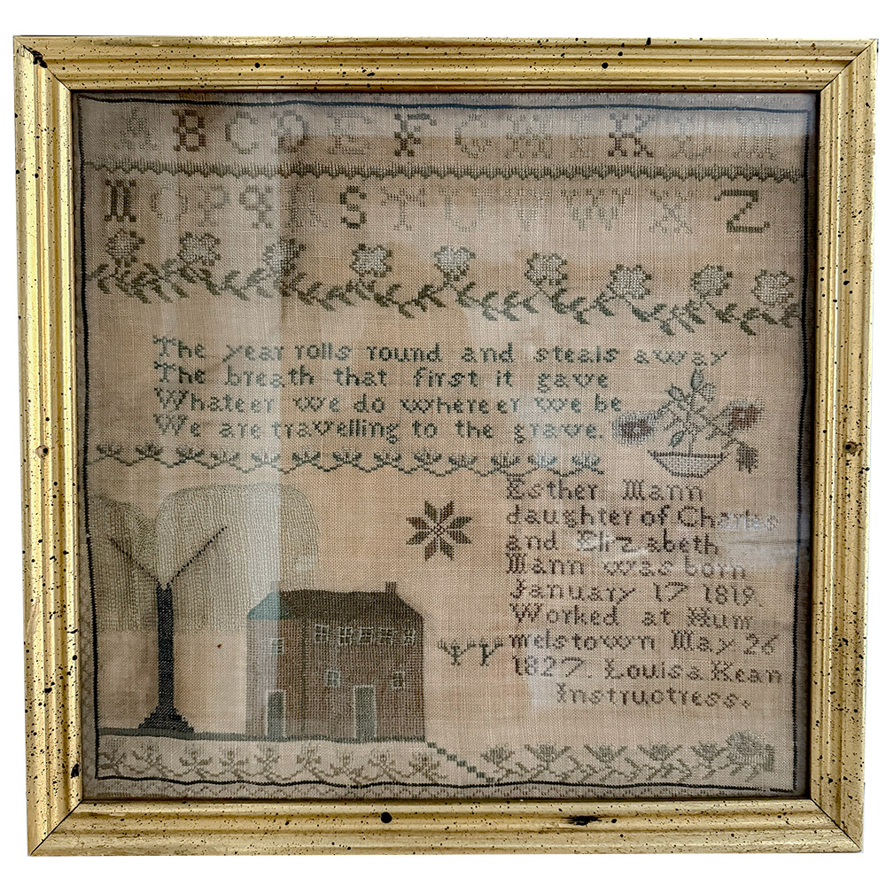

About

Esther Mann is the making of Ashley Morgan, an architect and ceramic artist based in Chicago, Illinois. Esther, her maternal forebear, was born in 1819 in Hummelstown, Pennsylvania. Trained in needlepoint and stitch work from a young age, Esther demonstrated notable skill, creating intricate compositions as early as eight years old. The creative energy that Esther exhibited as a young girl—working with her hands and often in solitude—serves as a parallel and grounding influence for Ashley.
The collection of images displayed here at esther-mann.com encompass the work produced - both building design and ceramic production - from 2021-2025.